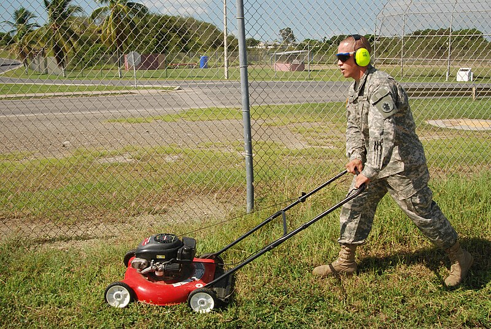
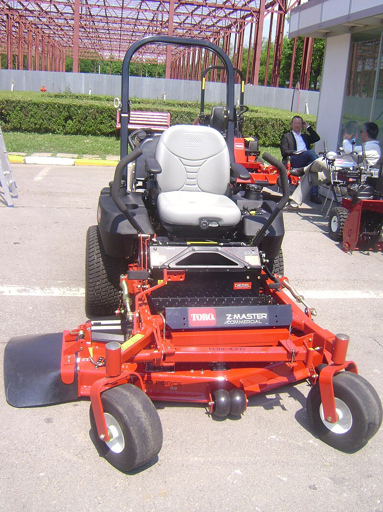
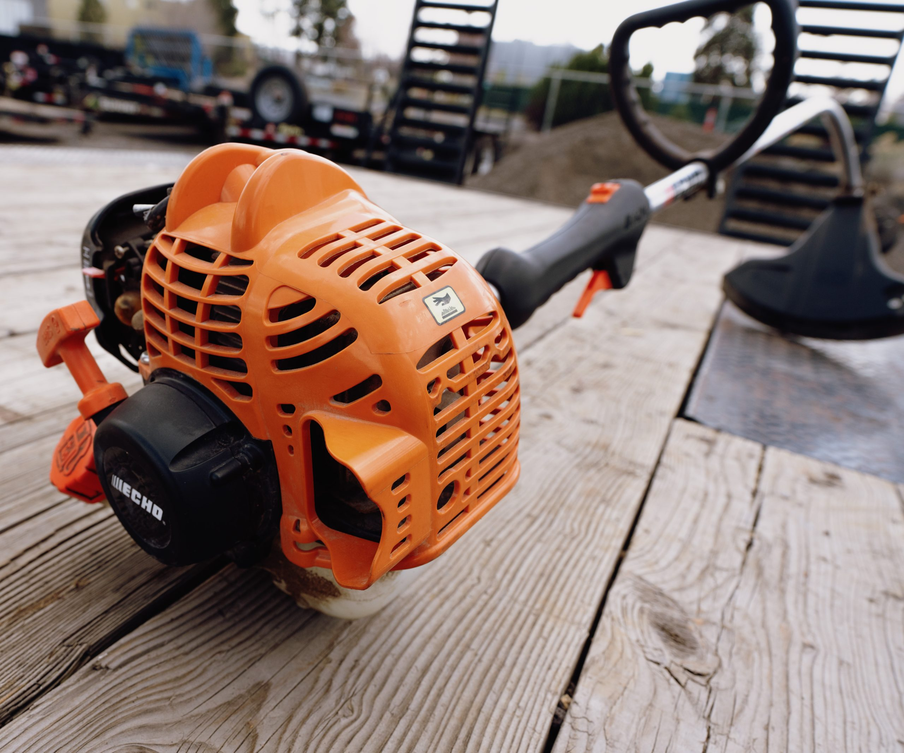
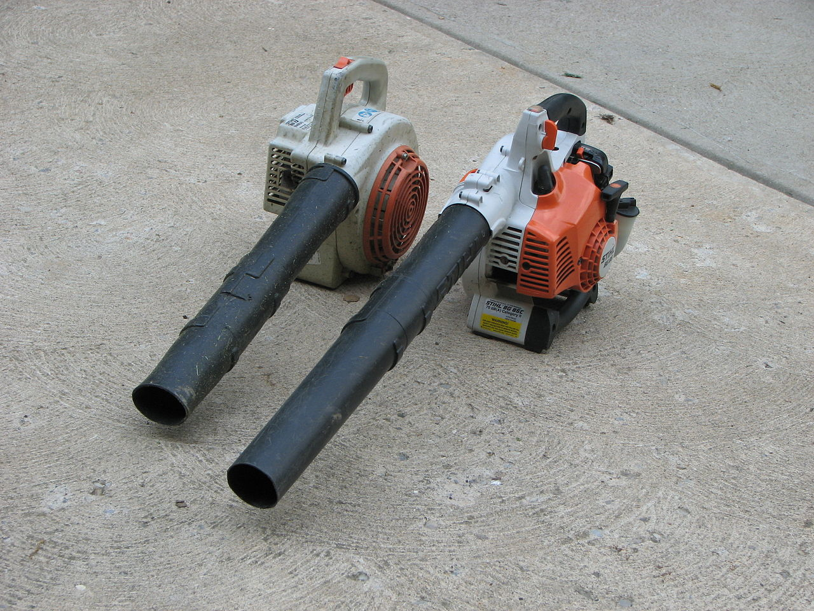

A lawn mower is a device utilizing one or more revolving blades (or a reel) to cut a grass surface to an even height.
A zero-turn riding lawn mower is a standard riding lawn mower with a turning radius that is effectively zero when the two drive wheels rotate in opposite direction, like a tank turning in place.
is a garden tool for cutting grass, small weeds, and groundcover. It uses a whirling monofilament line instead of a blade, which protrudes from a rotating spindle at the end of a long shaft topped by a gasoline engine or electric motor.
A leaf blower, commonly known as a blower, is a device that propels air out of a nozzle to move debris such as leaves and grass cuttings. Leaf blowers are powered by electric or gasoline motors.
Tools to help cut or Accesories for parts.